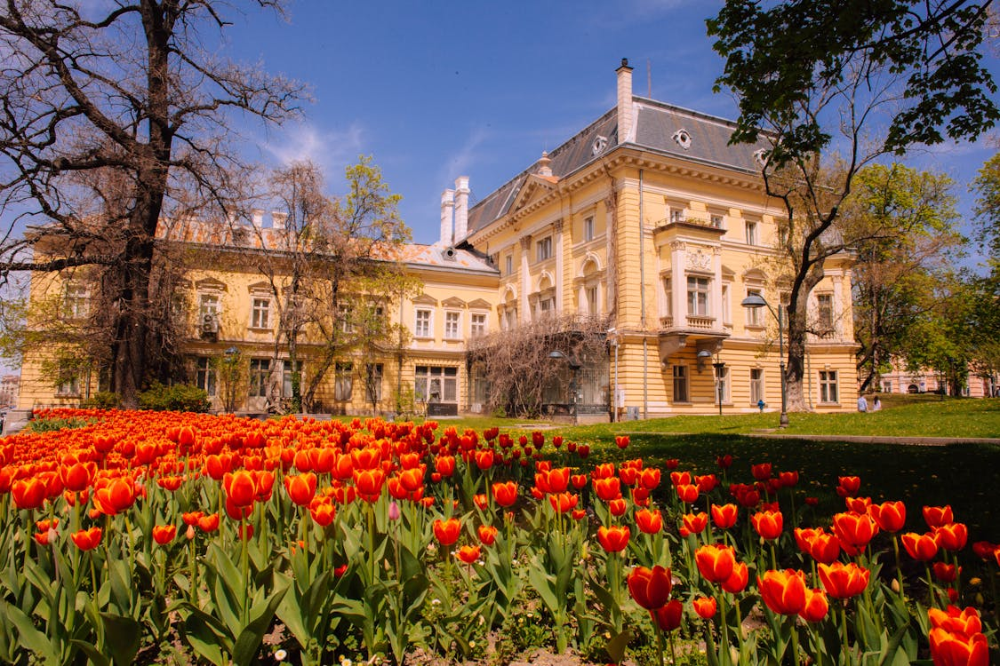
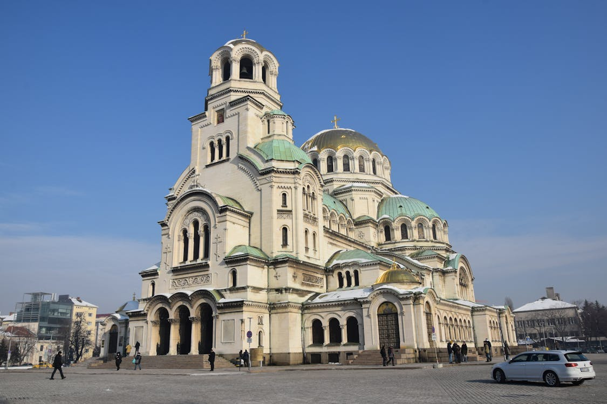
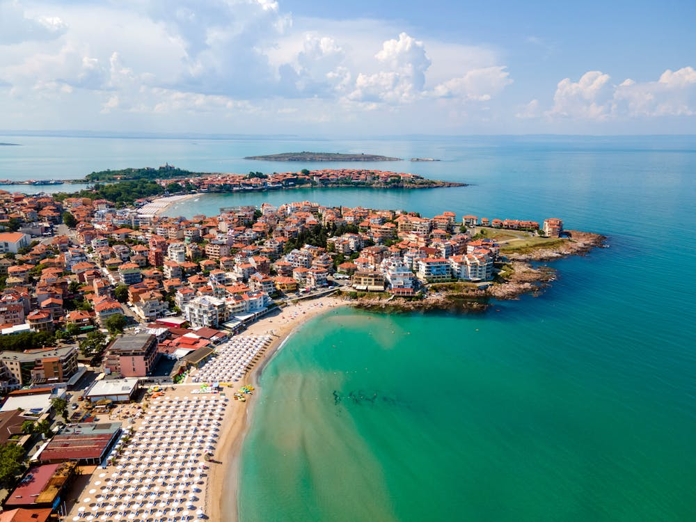

La Bulgarie, située dans le sud-est de l'Europe, est un pays aux paysages variés, allant des montagnes majestueuses aux plages pittoresques de la mer Noire. Riche en histoire et en culture, la Bulgarie est célèbre pour ses monastères anciens, ses traditions folkloriques et sa délicieuse cuisine locale.
Dominant le centre-ville, la cathédrale Alexandre-Nevski brille de tous ses dômes dorés. Tranchant avec le gigantisme hérité du commu-nisme, l'humble Sveta Petka Samardjiiska se dissimule aux regards, presque enfouie dans le sol. Sur les pentes du mont Vitocha, l'église de Boyana, classée par l'Unesco, dévoile un ensemble de fresques considérées comme les mieux conservées de l'art médiéval oriental.
Blottie au pied de la chaine du Pirin, Bansko est l'une des plus importantes stations de sports d'hiver de Bulgarie. Récompensée par le World Ski Award en 2019, Bansko s'impose comme la nouvelle destination européenne pour les skieurs.
Le village est construit au milieu de ces formations qui s'étendent sur 1000 ha. Les plus impressionnantes se regroupent autour du village voisin de Karlanovo, sur la route du monastère de Rojen. On en voit aussi de belles tout au long du sentier qui y mène et traverse le coeur de la zone des «pyramides».
Au gré des ruelles grossièrement pavées, agrippées à la colline, toute l'histoire de la Bulgarie se déroule. Ici, l'amphithéâtre romain, les ruines de l'agora et de l'odéon, là, la mosquée Djoumaia, partout ailleurs, des églises et de belles demeures datant de la Renaissance bulgare (XIX® s). Derrière leurs hauts murs se cachent généralement une cour à fontaine, une treille et des salons à l'orientale, où les banquettes semées de coussins courent sous de fastueux plafonds de bois sculpté.
L'idéal est d'y aller à la fin du printemps. Premiers exportateurs mondiaux d'essence de rose, les Bulgares sont fiers de cette vallée où la rose est cultivée en plein air, dans d'immenses champs. Sa ville principale, Kazanlak, mérite d'être visitée pour son festival de la Rose, chaque 1er week-end de juin, riche en folklore et en traditions.
Du lle au Ille s av. J.-C., les Thraces règnent sur la Bulgarie actuelle, où des souverains puissants se taillent des royaumes concurrents. Enfouis sous des tumulus au centre nord du pays, leurs tombeaux sont le témoignage dune civilisation largement méconnue dont les merveilles sont à découvrir. Classés au Patrimoine mondial de l'Unesco, les tombeaux thraces de Svechtari sont, sans aucun doute, les plus beaux de Bulgarie et ceux à ne pas manquer !